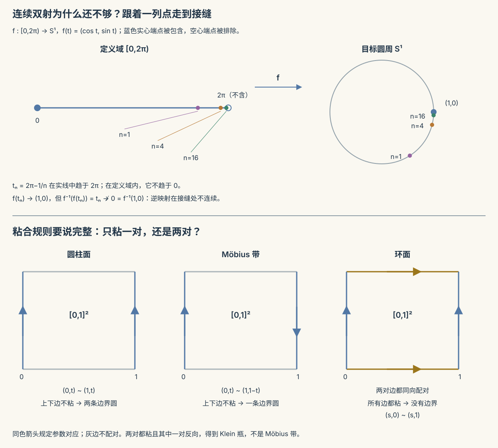

本页目录
拓扑 I · 拓扑空间与连续映射
点集拓扑问一个釜底抽薪的问题："连续"到底需要什么？答案：不需要距离，只需要"哪些集合算开集"的一份清单。本页从度量空间抽象出拓扑公理，重建连续与收敛，然后引出拓扑的灵魂概念——同胚（"咖啡杯 = 甜甜圈"的严格含义）。
学习层：把“开”从距离中取出来
1. 具体情境：哪些状态能被一次观测区分？
想象一个只有三个状态 \(a,b,c\) 的系统。观测规则只告诉你“状态落在哪些允许的集合里”，没有提供距离，也没有提供路径。把这些允许的集合规定为开集，并要求它们满足拓扑公理。若清单是
那么“开”就是这份清单中的成员；它不再是“存在一个半径足够小的球”。换一份清单，同一个点集、同一个函数，连续性也可能改变。
2. 先预测：恒等函数会不会连续？
以下两个恒等函数例子使用两点集 \(X=\{a,b\}\)；Sierpiński 拓扑在这里是 \(\{\varnothing,\{a\},X\}\)。先不打开结果，预测：
- 从 Sierpiński 拓扑 \(\{\varnothing,\{a\},X\}\) 到离散拓扑，是否连续？
- 反向从离散拓扑到 Sierpiński 拓扑，是否连续？
- 另取三点集 \(X'=\{a_0,a_1,b\}\)，源拓扑为 \(\{\varnothing,\{a_0,a_1\},X'\}\)。把 \(a_0,a_1\) 粘成 \(A\)、\(b\) 映为 \(B\) 后，商空间中的 \(\{A\}\) 是否开？
判断的唯一入口是目标开集的原像；不要用“图画上看起来没有断点”代替定义。
3. 形式桥：有限集合上把定义逐格算完
实验台对一个固定有限点集枚举所有目标开集 \(V\)，计算
后面的三点工作台还可选择全部 29 种有标号拓扑、改变函数的三个取值，并逐项计算子集的内部、闭包与边界。点在图上的位置只为排版，不表示距离或可达性。
它还把两台“造空间机器”拆开：商拓扑用 \(U\subseteq X/{\sim}\) 的饱和原像 \(q^{-1}(U)\) 定义开性；积拓扑用基本开矩形 \(U\times V\) 的任意并生成。有限掩码只是为了让每个集合运算都能看见。
无 JavaScript 时的静态读法：
| 模型 | 开集 / 原像账本 | 结论 |
|---|---|---|
| Sierpiński \(\to\) 离散 | \(\operatorname{id}^{-1}(\{b\})=\{b\}\)，但 \(\{b\}\notin\{\varnothing,\{a\},X\}\) | 不连续 |
| 离散 \(\to\) Sierpiński | 目标开集 \(\varnothing,\{a\},X\) 的每个原像都在离散拓扑中开 | 连续 |
| 商空间 \(q(a_0)=q(a_1)=A,q(b)=B\) | \(q^{-1}(\{A\})=\{a_0,a_1\}\) 是源空间开集 | \(\{A\}\) 在商空间开 |
| 两个 Sierpiński 的积 | 基本矩形 \(U\times V\) 取并；本例有限枚举得到 6 个积开集 | 这是积拓扑的一个具体账本 |
有限枚举能逐项检验这里选定的公理和定义，不能单独证明任意拓扑空间中的定理；任意并、有限交和连续复合等一般结论仍需抽象证明。
4. 误区 / 边界：距离直觉何时会失效？
- 连续不是函数的孤立属性：同一张函数表，换掉源或目标拓扑，结论可能从连续变不连续。
- 方向别记反：定义检查的是原像开；“正像开”是开映射的另一性质。
- 有限点集不是全世界：本实验的掩码枚举没有覆盖无限拓扑、序列不够用的空间或网/滤子论证。
- 积和商不是画图的口号：商空间必须检查饱和原像，积拓扑必须从矩形基生成；不能把所有子集都自动视为开。
5. 回到正式语言
拓扑公理把“附近”压缩成 \((X,\tau)\)；连续性把所有 \(\varepsilon\)–\(\delta\) 条件统一成“开集原像仍开”。在度量空间中，开球给出一组基，所以熟悉的距离定义被恢复；在没有自然距离的函数空间、商空间和数据空间里，开集语言仍然可用。
6. 迁移题
若 \(f:X\to Y\) 连续、\(g:Y\to Z\) 连续，试用原像的集合运算写出 \(g\circ f\) 连续的一行证明。再问：如果只知道 \(f\) 把开集送到开集，为什么还不能直接推出 \(f\) 连续？
1. 没有距离，怎样规定“足够附近”？
在实数上，连续性说：输出落在某个允许范围内的要求，可以由输入落在一个足够小的邻域内来保证。距离是描述这些邻域的一种方法。拓扑保留所有开邻域，暂时不指定它们的半径。
拓扑是集合 \(X\) 的子集族 \(\tau\subseteq2^X\)，满足 \(\varnothing,X\in\tau\)、任意并仍在 \(\tau\)、有限交仍在 \(\tau\)。成员叫开集；“开”是相对于所选拓扑的性质，不是点在纸上的位置。实线上的
不开，说明不能把“有限交”擅自换成“任意交”。不过有限点集上的拓扑确实对任意交封闭：不同的开集总共只有有限个，任意族去掉重复后就是有限交。这种额外性质不能从实验推广到实线。
| 拓扑 | 开集 | 需要保留的边界 |
|---|---|---|
| 离散 | 所有子集 | 同一集合上最细的拓扑 |
| 平庸 | 只有 \(\varnothing,X\) | 最粗的拓扑；不同点可能无法由开集区分 |
| 余有限 | \(\varnothing\)，以及补集有限的子集 | 空集必须单独列入；有限集合上就是离散拓扑 |
| 度量拓扑 | 每个点附近都包含一个开球的集合 | 不同的度量可能生成相同拓扑 |
若 \(\tau_1\subseteq\tau_2\)，称 \(\tau_2\) 更细。恒等映射 \((X,\tau_2)\to(X,\tau_1)\) 连续，因为目标要求检查的开集更少；反方向不一定连续。这里比较的是开集族的包含，不是笼统的“空间更松”。
用基减少要列出的开集
给定子集族 \(\mathcal B\)，它成为某个拓扑的基需要两条：覆盖 \(X\)；若 \(x\in B_1\cap B_2\)，存在 \(B_3\in\mathcal B\) 使 \(x\in B_3\subseteq B_1\cap B_2\)。令 \(\tau\) 是所有基元素的并。任意并自然封闭；两个并的交在每个交点附近都含有这样的 \(B_3\)，所以又是基元素的并。由此得到拓扑。
例如实线上的开区间构成基，有理端点开区间也构成同一拓扑的基。基不必把所有开集列出来。判断映射连续时，只检查目标的一组基就够了，因为原像保持任意并。
2. 闭包、内部和边界：用邻域实际计算
闭集是开集的补集。\(A\) 的闭包 \(\overline A\) 是包含它的所有闭集之交；内部 \(A^\circ\) 是包含在它里面的所有开集之并。定义给出
证明闭包判据时，若有一个开邻域与 \(A\) 不交，其闭补集包含 \(A\) 却不包含 \(x\)；反之 \(x\) 不在某个包含 \(A\) 的闭集里，它的开补集就提供了这样的邻域。两边都是定义的直接推论。
边界 \(\partial A=\overline A\setminus A^\circ=\overline A\cap\overline{X\setminus A}\)：边界点的每个开邻域都同时碰到 \(A\) 与其补集。稠密意为 \(\overline A=X\)。闭包并不等于“在图上给集合包一圈”。
例：\(X=\{a,b,c\}\)，\(\tau=\{\varnothing,\{a\},\{a,b\},X\}\)。闭集为 \(\varnothing,\{c\},\{b,c\},X\)，所以
点 \(c\) 的唯一开邻域是 \(X\)，必然碰到 \(b\)；点 \(a\) 有开邻域 \(\{a\}\) 避开 \(b\)。这就是闭包包含 \(c\) 而不包含 \(a\) 的原因，画图距离不参与判断。
补充术语：若每个 \(x\) 的开邻域都碰到 \(A\setminus\{x\}\)，称 \(x\) 为 \(A\) 的聚点。于是 \(\overline A\) 是 \(A\) 与其所有聚点之并。在非 \(T_1\) 空间里，“每个邻域含无穷多个 \(A\) 中的点”不应拿来替代这一定义。
3. 连续性：目标的每个要求都能拉回输入端
定义 \(f:X\to Y\) 连续，是指对每个目标开集 \(V\)，\(f^{-1}(V)\) 在 \(X\) 开。这里 \(f^{-1}(V)\) 是集合原像，不要求 \(f\) 有逆函数。
在度量空间里，它与逐点 \(\varepsilon\)–\(\delta\) 定义等价。若原像开，取目标球 \(B_\varepsilon(f(x))\)，它的原像是含 \(x\) 的开集，故含某个 \(B_\delta(x)\)。反过来，若每个点满足 \(\varepsilon\)–\(\delta\) 条件，对任意开集 \(V\) 与 \(x\in f^{-1}(V)\)，先选 \(B_\varepsilon(f(x))\subseteq V\)，再选 \(B_\delta(x)\) 映入这个球。因此原像的每个点都是内点，原像开。
复合连续现在有一行证明：
先用 \(g\) 的连续性，再用 \(f\) 的连续性。常值映射也连续：任一原像只有空集或全空间两种可能。
等价判据还包括“闭集原像闭”，以及
前向：闭集 \(f^{-1}(\overline{f(A)})\) 包含 \(A\)，也包含 \(\overline A\)。反向：令 \(A=f^{-1}(C)\)，其中 \(C\) 闭，则条件使 \(\overline A\subseteq f^{-1}(C)=A\)，故 \(A\) 闭。
开映射要求正像开，是另一条性质。实线恒等映射 \((\mathbb R,\text{标准})\to(\mathbb R,\text{离散})\) 是开映射，却不连续：目标开集 \(\{0\}\) 的原像在标准拓扑中不开。反向恒等映射连续，却不是开映射。两者甚至都是双射，仍不能混淆。
4. 序列什么时候够用，什么时候会漏掉信息？
定义 \(x_n\to x\)：每个含 \(x\) 的开集都包含序列的某个尾部。连续映射保持序列极限，因为目标邻域的原像是输入端的邻域。
若 \(X\) 第一可数，即每个点都有可数邻域基，则序列也足以检测闭包与连续性。把基换成递减的 \(U_1\supseteq U_2\supseteq\cdots\)。若 \(x\in\overline A\)，每个 \(U_n\cap A\) 非空，选 \(a_n\) 在其中即有 \(a_n\to x\)。若 \(f\) 在 \(x\) 不连续，有目标邻域 \(V\)，每个 \(U_n\) 都含某个 \(x_n\) 使 \(f(x_n)\notin V\)；于是输入序列趋于 \(x\)，输出却不趋于 \(f(x)\)。度量空间用半径 \(1/n\) 的球给出第一可数性。
一般空间的反例。在不可数集合 \(X\) 上取余可数拓扑：空集与所有补集可数的集合开。若 \(x_n\to x\)，删掉序列所有不等于 \(x\) 的取值（可数个）仍得到 \(x\) 的开邻域；因此序列最终只能等于 \(x\)。恒等映射从此拓扑到离散拓扑保持所有序列极限，却不连续，因为单点集在离散目标中开，在源中不开。序列检查确实会漏判，不能只说“存在一些怪空间”。
网允许用有向集合代替自然数作指标。闭包中的一点可以把它的所有邻域按反向包含排列，再在每个邻域与 \(A\) 的交中选点，得到收敛到它的网；这说明一般化补上了什么。本页不展开网与滤子的完整理论。
下一页将系统讨论分离性。这里先辨认三层：\(T_0\) 要求任意不同两点至少有一个开集只含其中一点；\(T_1\) 要求每个单点闭；Hausdorff（\(T_2\)）要求不同点有不交的开邻域。Hausdorff 空间的序列极限唯一，否则尾项最终要同时落在两个不交的邻域。平庸拓扑中常值序列就可能收敛到多个点。有限 \(T_1\) 空间必离散，因为每个集合都是有限个闭单点的并。
5. 同胚要求双向连续，不是“看起来能变形”
同胚是双射 \(f:X\to Y\)，且 \(f\) 与逆函数都连续。同胚把所有开集结构完整对应起来。一个连续双射若又是开映射（或闭映射），其逆便连续；只有“连续双射”则不足够。
可核验的例子是
两式互逆且连续，故有界区间与无界实线同胚，有界性不是拓扑不变量。
另一例是 \(f:[0,2\pi)\to S^1\)，\(f(t)=(\cos t,\sin t)\)。它连续且双射，但 \(t_n=2\pi-1/n\) 的像趋于 \((1,0)\)，逆像却不趋于 \(0=f^{-1}(1,0)\)。逆在接缝处不连续，所以不是同胚。换成把闭区间两端真的粘合的商空间，就能得到圆周；改变拓扑与只画一个圆是不同操作。
“咖啡杯像甜甜圈”只能作模型提示：需要说明讨论的是理想化的有一把手、无额外洞或破口的表面，还是三维实体。对闭连通可定向曲面，亏格可以分类；不能把“数洞”当成所有拓扑空间的通用分类方法。

6. 子空间、积与商各自保证什么？
子空间 \(A\subseteq X\) 的开集是 \(A\cap U\)，\(U\) 在 \(X\) 开。例如 \([0,1]\) 中的 \([0,1/2)\) 相对开，取 \(U=(-1,1/2)\) 即可。映射 \(h:Z\to A\) 连续，当且仅当把它再包含进 \(X\) 后连续：原像 \(h^{-1}(A\cap U)=h^{-1}(U)\)。所以连续函数的限制仍连续。
积拓扑在 \(X\times Y\) 上由开矩形 \(U\times V\) 生成。两个坐标投影连续，因为 \(\pi_X^{-1}(U)=U\times Y\)；映射 \(h:Z\to X\times Y\) 连续当且仅当两个坐标 \(\pi_Xh,\pi_Yh\) 连续，反向由矩形原像是两坐标原像的交得到。
无限积中的基本开集只限制有限多个坐标，其余坐标取全空间。不能把每个坐标都任意限制的盒拓扑与积拓扑混淆；例如 \(\mathbb R^{\mathbb N}\) 中 \(\prod_n(-1/n,1/n)\) 在盒拓扑中开，却不是积开集：任何只限制有限坐标的基本邻域都能在未限制的一个坐标上跑出这个盒子。
商拓扑需要满射 \(q:X\to Y\)，规定
原像保持任意并和有限交，因此这是拓扑，且是使 \(q\) 连续的最细拓扑。它的实用判据是：\(h:Y\to Z\) 连续当且仅当 \(h\circ q\) 连续。因为对目标开集 \(V\)，\(q^{-1}(h^{-1}(V))\) 开恰好等价于 \(h^{-1}(V)\) 在商中开。
给定 \(f:X\to Z\)，要把它下降为 \(h:Y\to Z\)，首先必须在每条纤维上常值；这是良定义条件。有了商拓扑，若 \(f\) 连续，下降后的 \(h\) 自动连续。连续满射不自动是商映射，例如离散实线到标准实线的恒等连续满射，诱导的商拓扑本该离散，和既定标准拓扑不同。
一个集合 \(A\subseteq X\) 称饱和，若 \(q^{-1}(q(A))=A\)，即它包含完整纤维。饱和的源开集才可以直接对应商开集；“源中开”单独并不够。
明确哪对边被粘起来
用正方形 \([0,1]^2\)：
- 只规定 \((0,t)\sim(1,t)\)，上下两边不配对，得到圆柱面，有两条边界圆；
- 只规定 \((0,t)\sim(1,1-t)\)，上下两边不配对，得到 Möbius 带，有一条边界圆；
- 同时规定 \((0,t)\sim(1,t)\) 与 \((s,0)\sim(s,1)\)，得到环面 \(S^1\times S^1\)，没有边界。
若两对边都粘、其中一对反向，则得到 Klein 瓶而不是 Möbius 带。这里的“同向/反向”指参数怎样对应，不能仅靠画在纸上的顺时针箭头猜。射影空间与群作用的轨道空间也用商拓扑构造。
常见的拓扑流形约定还要求 Hausdorff 与第二可数，并且每点局部同胚于 \(\mathbb R^n\)；只有局部欧氏这四个字仍可能放进不希望包含的空间。带边界流形另用半空间作局部模型。
7. 迁移练习
题 1：一个三点集合的内部和边界
仍用 \(\tau=\{\varnothing,\{a\},\{a,b\},X\}\)，计算 \(A=\{a,c\}\) 的内部、闭包与边界。\(A\) 是否稠密？它的内部是否也稠密？
展开推导
\(A^\circ=\{a\}\)，包含 \(A\) 的唯一闭集是 \(X\)，故 \(\overline A=X\)，\(\partial A=\{b,c\}\)。每个非空开集都含 \(a\)，所以 \(\overline{\{a\}}=X\)：这道题里内部也稠密。这个有限例子不能推出“一切稠密集的内部都稠密”；实线中的有理数稠密而内部为空。
题 2：闭包点为何不一定是序列极限？
在不可数集合的余可数拓扑上，固定一点 \(p\)，令 \(A=X\setminus\{p\}\)。证明 \(p\in\overline A\)，却没有 \(A\) 中的序列收敛到 \(p\)。
展开推导
每个含 \(p\) 的开邻域都不可数，不可能只含 \(p\)，所以必与 \(A\) 相交，得 \(p\in\overline A\)。任取 \(A\) 中序列，其所有取值组成可数集合 \(C\)；\(X\setminus C\) 是含 \(p\) 的开邻域，却没有任何一项序列落入其中，因此不可能收敛。
题 3：函数能否穿过一次粘合？
把 \([0,1]\) 的两端粘成一点，商映射记作 \(q\)。连续函数 \(f:[0,1]\to\mathbb R\) 何时能写成 \(f=h\circ q\)？分别检查 \(f(t)=t\) 与 \(f(t)=\cos(2\pi t)\)，并说明下降后的 \(h\) 为何连续。
展开推导
唯一非单点纤维是 \(\{0,1\}\)，故良定义充要条件为 \(f(0)=f(1)\)。第一函数不满足；第二函数两端均为 \(1\)，满足。条件成立时定义 \(h([t])=f(t)\)，由商拓扑的连续性判据与 \(h\circ q=f\) 连续，得 \(h\) 连续。端点值相同负责良定义，商拓扑负责连续性，两步不能省略其中一步。
进一步学习
下一页紧致、连通与分离性会解释何时连续双射自动成为同胚，并给出区分区间与圆周等空间的可靠不变量。
完整基础课程可读 Allen Hatcher, Notes on Introductory Point-Set Topology 第 1、4 章。这里有限模型的运算用于检验具体定义；无限空间中的结论要使用正文保留的邻域、基和原像论证。